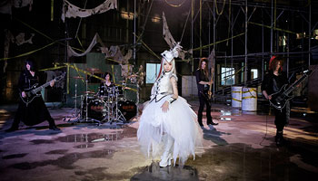
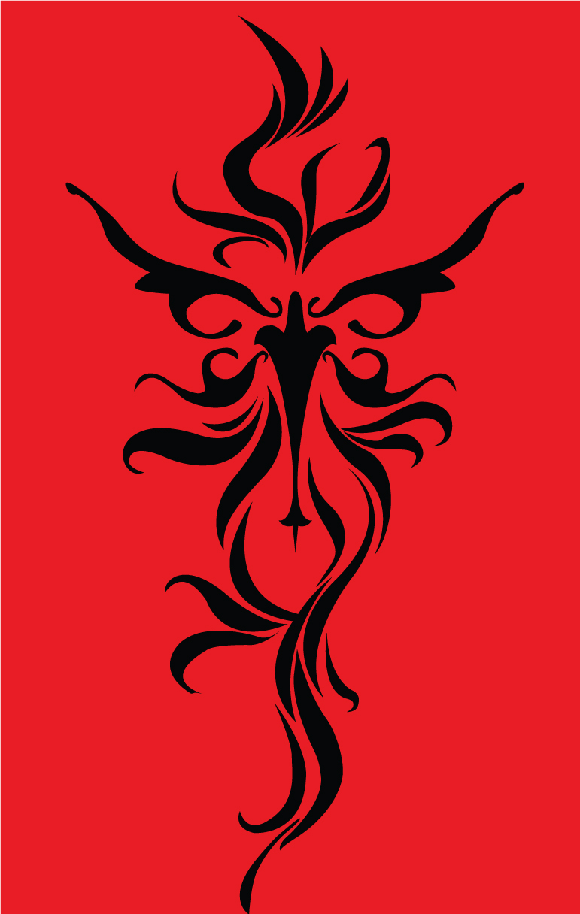
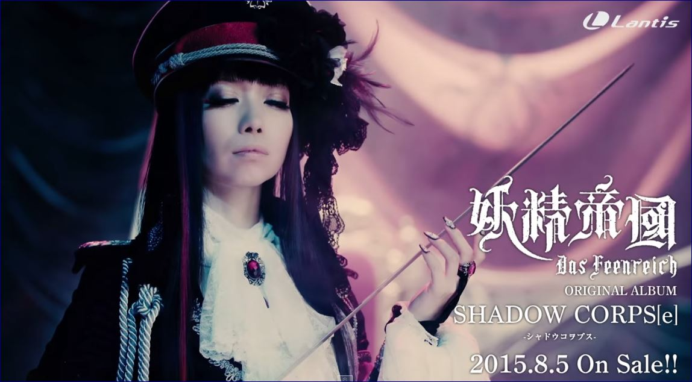
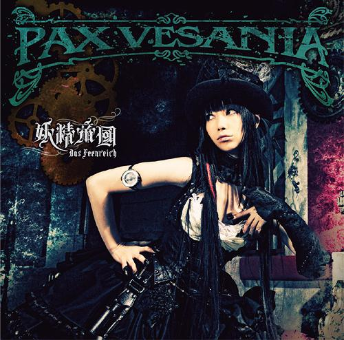
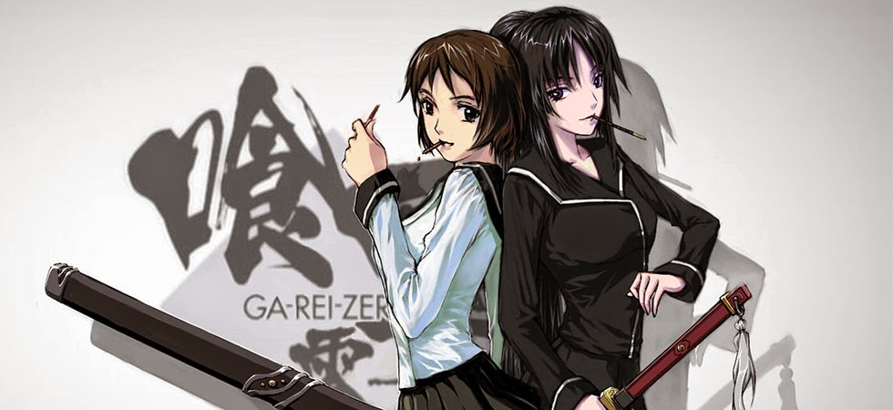

Yousei Teikoku
“Imperio de las Hadas"
Es una banda japonesa de música, formada en 1997 y parte de la Discografía Team Fairithm, que la actualmente
la conforma 5 miembros, pero que en un principio era un dúo que lo integraba Yui y Tachibana.
En el año 2005, Yousei Teikoku se encargó de hacer los temas Last Moment y Fortuna, insert songs del juego
“My-HiME:Unmei no Keitouju” de la compañía CIRCUS, basado en el anime de “My-HiME”. Aunque fue hasta el 2006 que
hicieron su debut oficial como una banda con su mejor sencillo “Ashita wo Yurushite”, (OP del juego AR
“Wasurerareta Natsu”) de la compañía CIRCUS, el cual fue lanzado el 8 de Marzo del 2006. El 26 de Abril de ese
mismo año se lanzó el sencillo “Senketsu no Chikai”, usado como el OP de “Magical Pokaan”. Así fue como
comenzaron a ganar reconocimiento entre los fans.
Ellos han publicado varios álbumes independientes y cuatro grandes álbumes con su discografía actual Lantis:
Gothic Lolita Propaganda (2007), Metanoia (2007), Gothic Lolita Doctrine (2009), Gothic Lolita Agitator (2010) y su
último álbum Pax Vesania (2013). Haz clic aqui para escuchar su musica.

Aqui tocaremos unos puntos importantes:
- Miembros
- Concepto Musical
- Logo
- Estilo
- Discografía
- Animes
- Enlaces
Miembros
- Fairy Yui – Vocal, coros y escritora
- Takana Tachibana – Teclados, guitarra, composición, arreglo y escritor
- Nanami – Bajo
- Gight – Batería
- Shiren – Guitarra
-
Concepto Musical
- El propósito de su música es unir el mundo de las hadas “HACER QUE LOS SERES HUMANOS RECUERDEN EL CORAZON
PURO DENTRO DE ELLOS QUE CREEN EN LAS HADAS, OLVIDADO ANTES DE QUE NOS DIÉRAMOS CUENTA”, como lo es el imperio de
las hadas con el mundo humano de una forma espiritual conocido como Spiritua. “Gotico” e “Imperio” son palabras
claves con sus ideas musicales.
-
Logo

“La gente puede
olvidar algún día, pero las hadas están dentro de un corazón puro, tu podrás recordar y creer”
-
Estilo
- Con un look gótico, su música es transmitida a través de la música electrónica, mezclado con influencias del
rock, pop y del heavy metal. Haciendo que esta banda tenga un sonido etéreo, extraño y curioso para el oído.
-
Discografía
Aquí encontraremos los mejores Álbumes y Sencillos de Yousei Teikoku que con el tiempo se ha convertido los más
escuchados y vistos para varios fans. Al igual que los mejores conciertos que ha dado, donde se escucharon los
sencillos de algunas álbumes.
ÁLBUMES
- Metanoia (2007) 
- Gothic Lolita Propaganda (2007)
- Gothic Lolita Agitator (2010)
- Gothic Lolita Doctrine (2010)
- Rebelion Athem (2010)
- Pax Vesania (2013)
- Hades: The Other World (2014)
SENCILLOS
- Last Moment (2007)
- Hades: The Rice (2007) 
- Asgard (2010)
- Rebellion Athem (2010)
- Astral Dogma (2013)
- Kuusou Mesorogiwi (2013)
- Mischievous Of Alice (2014)
CONCIERTOS
- Dai Rokkai Koushiki Shikiten Tour PAX VESANIA LIVE TOUR (2013) CLIC AQUI
- Tokuten Shiki Shikiten 920 Putsch (2010) CLIC AQUI
-
Animes
Este es un listado de los animes donde han salido sus canciones y se han convertido los favoritos de la mayoría de
los fans:
- Mirai Nikki
- Seikon no Qwaser 
- Venus versus Virus
- Renkin San-kyuu Magical Pokaan
- Innocent Venus
- Ga-Rei: Zero
- Kurokami
- Katanagatari
- Tokyo ESP
- Queen’s Blade
- Big Order
-
Enlaces
- Página Oficial de Yousei Teikoku: clic aqui
- Facebook Oficial: clic aqui